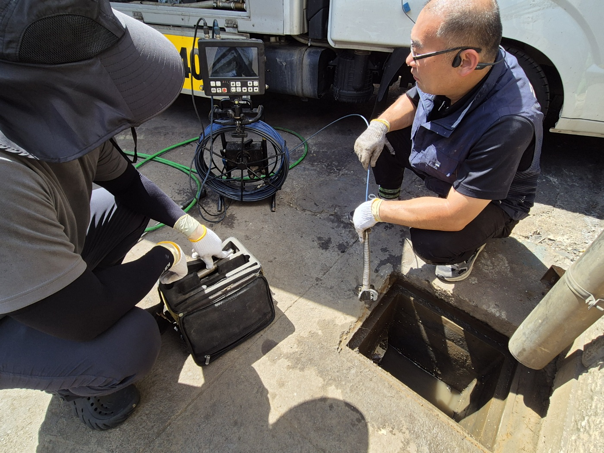
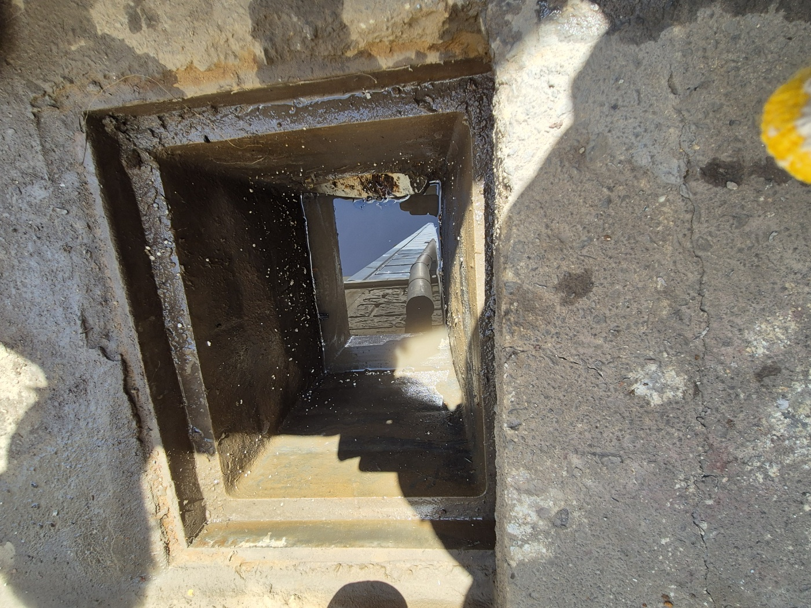
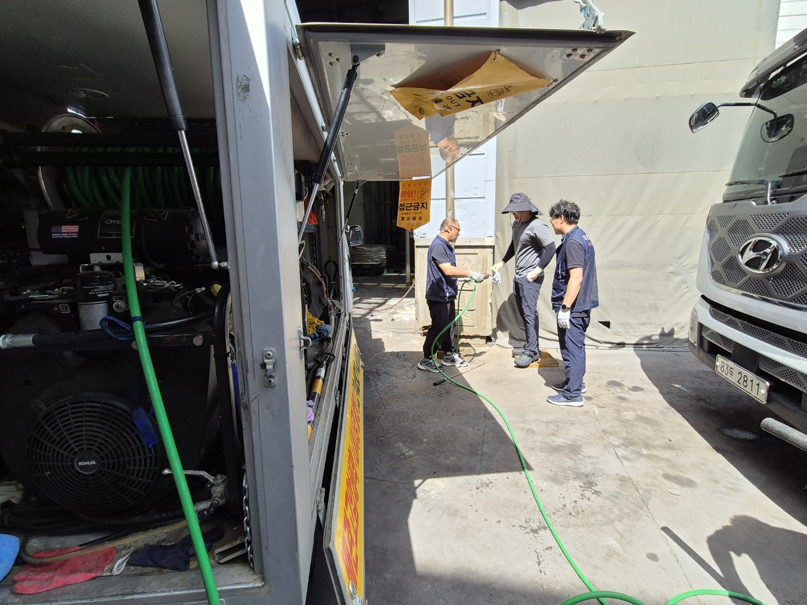
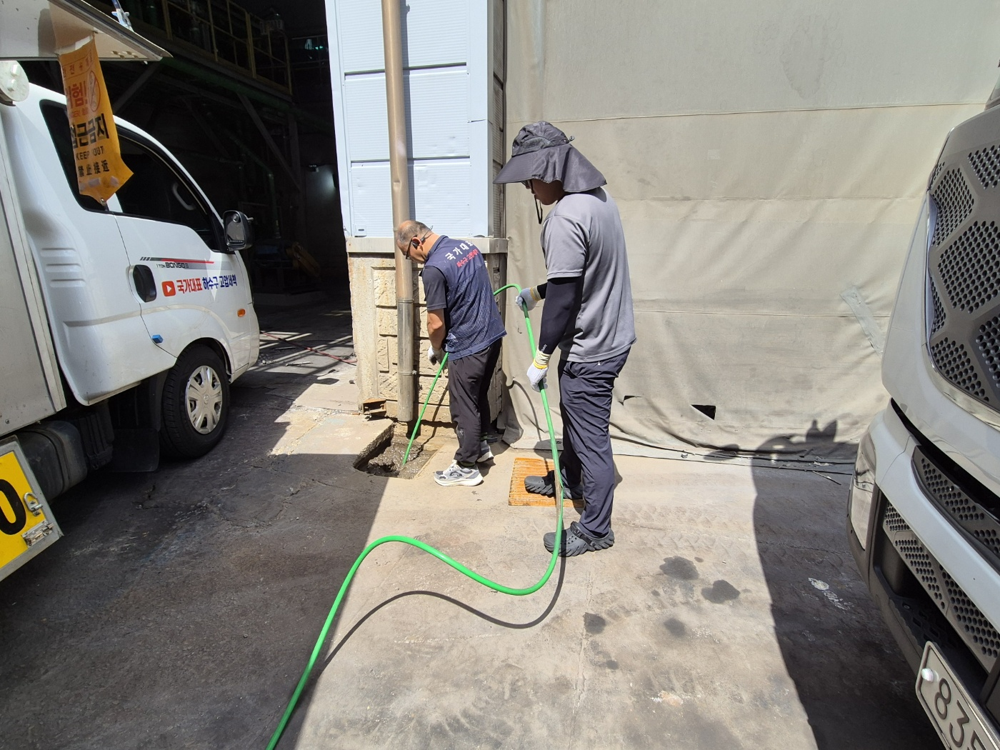
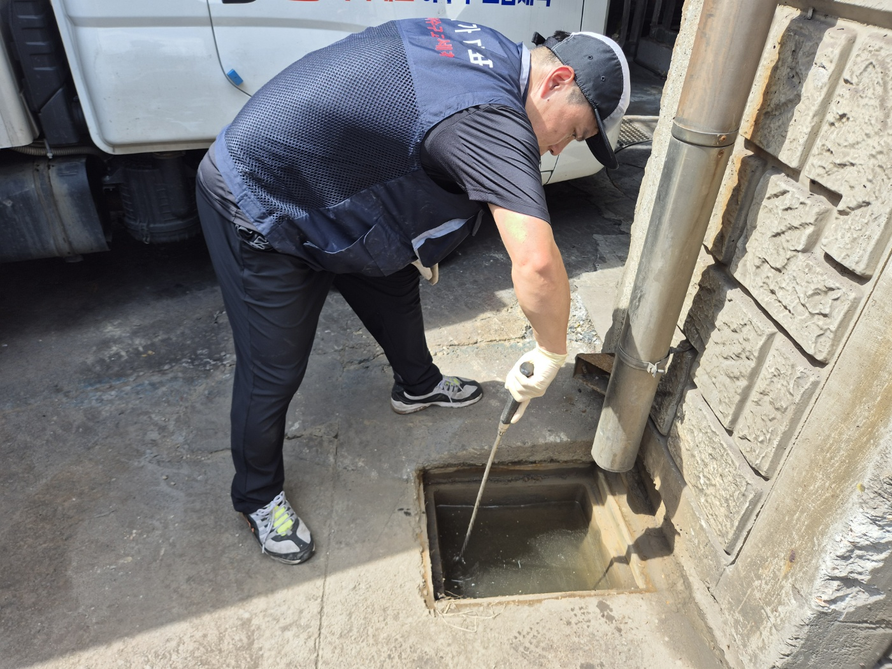
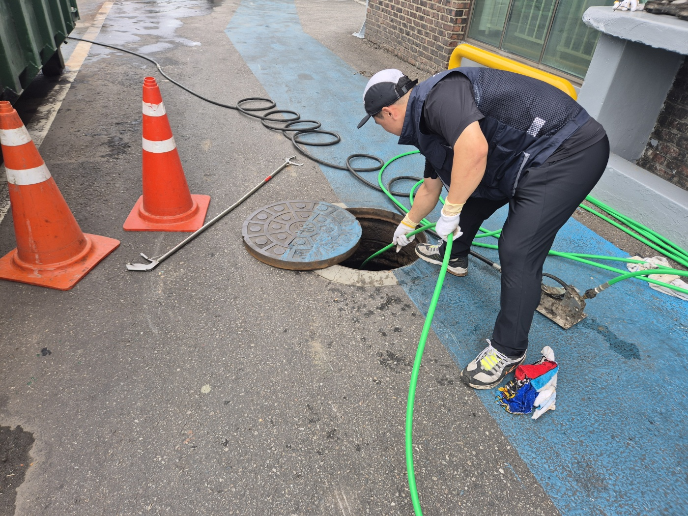
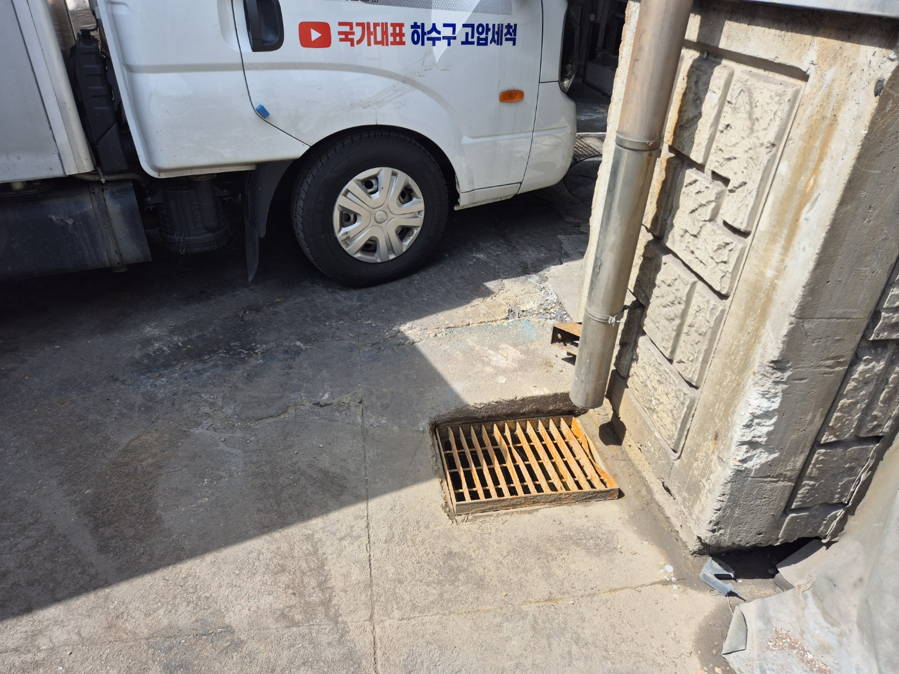
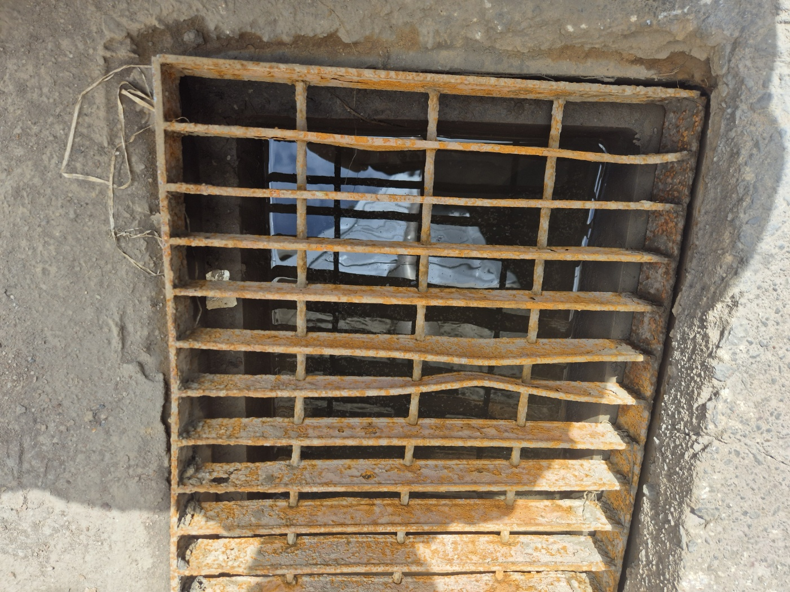

안녕하세요.. 고고고 설비입니다.. 오늘은 안성시 공도읍에 있는 한 공장에서 우수관(빗물배수관)이 막혀 물이 안 빠진다는 연락을 받고 다녀온 현장입니다.
건물 뒤편 작업 공간이었는데, 도착하자마자 장비부터 챙겨서 내시경 카메라랑 공구부터 꺼내 정리했어요.. 공장 특성상 배관이 여러 군데로 얽혀 있어서, 어디부터 막혔는지 차근차근 확인해야 했습니다. 마당이 넓고 라인도 길어서, 오늘은 한 군데만 보고 끝낼 게 아니라는 게 딱 느껴지더라고요.
건물 벽 쪽 빗물 내림관 아래에 작은 점검구가 있었는데, 안을 들여다보니 내림관에서 떨어진 물이 그대로 고여있는 상태였어요.. 정상이면 바로바로 빠져야 하는데 물이 안 내려가고 있더라고요. 얼마 전 비가 크게 온 뒤로 이 앞이 계속 질퍽거렸다고 하셨습니다.

차량에서 고압호스를 풀어 건물 벽 쪽까지 끌어왔습니다. 공간이 좁아서 세 명이 같이 움직이며 호스 방향을 잡고, 위험 구간에는 접근금지 표시도 걸어뒀어요. 공장 안쪽에 다른 작업자분들도 오가시는 곳이라, 동선부터 정리하고 시작했습니다.

저희 차량을 바짝 붙여두고, 차량에 있는 장비에서 바로 호스를 이어서 투입했습니다. 같은 라인이 건물 안쪽까지 이어져 있어서, 한 지점만 봐서는 정확한 원인을 알기 어려웠어요.

막대 도구로 점검구 안쪽을 훑어보니 바닥까지 흙과 이물질이 꽤 쌓여있는 게 느껴지더라고요.. 오랫동안 청소를 안 한 티가 났습니다. 도구 끝에 닿는 느낌만으로도 상당히 두껍게 쌓여있다는 게 짐작됐어요.

건물 앞쪽 포장된 마당에 있는 원형 맨홀도 같은 배관 라인이라 함께 열어 확인했습니다. 콘 표지판을 세워두고, 이쪽에서도 고압호스를 넣어 반대편에서 밀어내는 식으로 작업했어요. 거리가 좀 있다 보니 호스도 그만큼 길게 풀어야 했고, 두 지점을 오가며 확인하느라 시간이 꽤 걸렸습니다.

두 지점을 오가며 구간별로 고압세척을 반복한 뒤, 점검구 뚜껑(그레이팅)을 다시 제자리에 맞춰뒀습니다. 저희 차량 옆에서 마무리하는데, 다행히 비 예보도 없어서 여유 있게 정리할 수 있었어요. 뚜껑 모양이 워낙 낡아서 원래 자리에 딱 맞게 앉히는 데도 신경을 좀 썼습니다.

마지막으로 그레이팅 아래를 다시 들여다보니, 처음과 다르게 물이 맑고 잔잔하게 잘 빠져있는 게 보이더라고요.. 공장처럼 넓은 부지는 배수 라인이 길고 접근구도 여러 곳이라, 한 군데만 보고 끝내지 않고 이렇게 관련 지점을 같이 확인하는 게 재발을 줄이는 데 중요합니다.

고고고 설비는 주택, 아파트, 원룸, 상가, 공장의 생활 하수 오수 배관을 관리해 주는 업체입니다. 고고고 설비에 전화 주시면 친절상담 정확한 진단 확실한 해결로 보답해 드리겠습니다!!